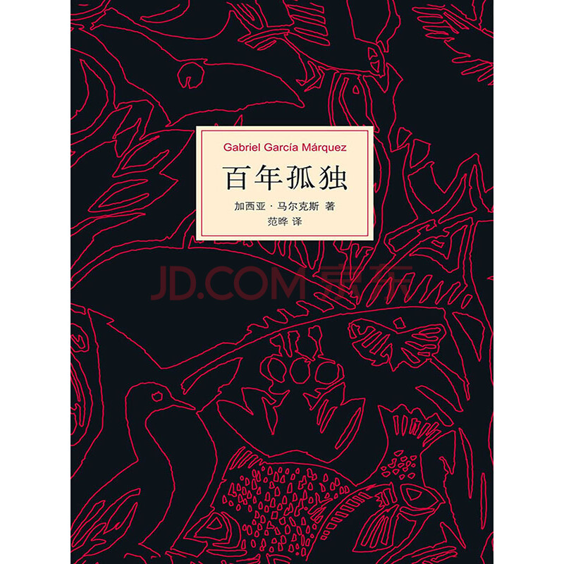
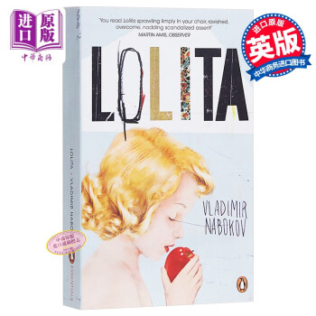
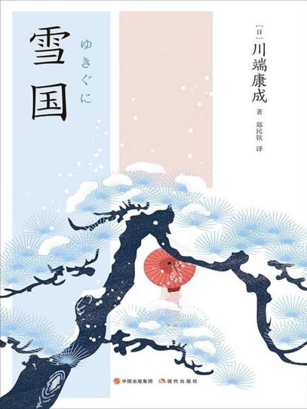

|

《百年孤独》 |
内容简介布恩迪亚家族七代人在马孔多小镇的兴衰史，充斥着离奇的魔幻情节：吉普赛人的预言、带尾巴的婴儿、会飞的蕾梅黛丝、失眠症引发的记忆崩塌，以及最终被飓风卷走的小镇。小说以魔幻笔触解构时间与命运，在荒诞中映照拉丁美洲的历史沧桑。 突出优点马尔克斯用"魔幻现实主义"将神话传说、民间故事与殖民历史熔铸一炉，如蕾梅黛丝身披床单升天的场景，既超现实又隐喻着人性的纯粹与世俗的割裂。 家族成员重复的名字（奥雷里亚诺、阿玛兰妲）、循环的命运（近亲通婚的诅咒），揭示人类在时间长河中无法摆脱的孤独本质，文字如飓风般席卷读者的情感认知。 |
|

《洛丽塔》 |
内容简介中年教授亨伯特以第一人称讲述对少女洛丽塔的病态迷恋，他通过与洛丽塔母亲结婚接近目标，在母亲死后带着洛丽塔漫游美国，最终在偏执的占有欲中走向毁灭。小说以精致的语言包裹禁忌主题，挑战读者的道德认知。 突出优点纳博科夫用华丽到近乎奢靡的修辞（如将洛丽塔的笑声比作"一串银铃在玻璃杯中晃动"），将病态叙事转化为文学奇观，让邪恶披上美学外衣。 以亨伯特的自我辩解为切口，揭露人类潜意识中的欲望合理化机制，迫使读者在厌恶与共情间摇摆，堪称对人性幽暗面的锋利解剖。 |
《檀香刑》 |
内容简介以清末山东为背景，刽子手赵甲、义士孙丙、县令钱丁因"猫腔"艺人孙丙反抗德国殖民者的事件交织。小说围绕"檀香刑"这一酷刑展开，融合民间戏曲、鬼神传说与历史暴力，用血腥叙事叩问民族灵魂。 突出优点莫言将猫腔唱词、高密东北乡的俚语方言融入叙事，如赵甲行刑时的"凌迟口诀"，让文字充满原始粗粝的生命力，恰似一场感官炸裂的文学盛宴。 通过刽子手的视角解构"正义"与"邪恶"的边界，当酷刑被赋予仪式感（如檀香刑的雕刻工艺），历史的荒诞与人性的扭曲在极致场景中暴露无遗。 |
|

《雪国》 |
内容简介东京作家岛村三次前往雪国，与艺伎驹子、少女叶子产生情感羁绊。小说以雪国的银白世界为幕布，驹子在温泉旅馆的梳妆、叶子在车厢玻璃上的倒影、雪夜中熄灭的灯火，在物哀美学中演绎生命的瞬间之美与永恒虚无。 突出优点川端康成用极致细腻的笔触捕捉"瞬间之美"，如驹子"脖颈上的胭脂像落雪般融化"的描写，将自然景物与人物情欲融为一体，处处透着"物哀"中"美即消亡"的宿命感。 岛村的旁观姿态、驹子的热烈执着、叶子的空灵虚幻，构成三重镜像——当岛村凝视雪国时，读者亦在凝视人性在现实与理想间的摇摆，文字如残雪般清冷又深邃。 |